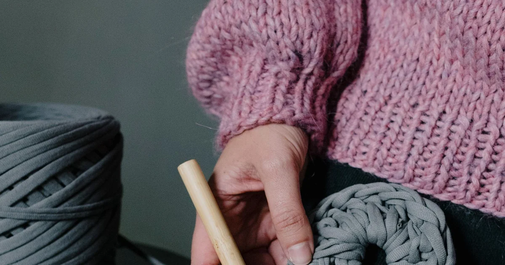
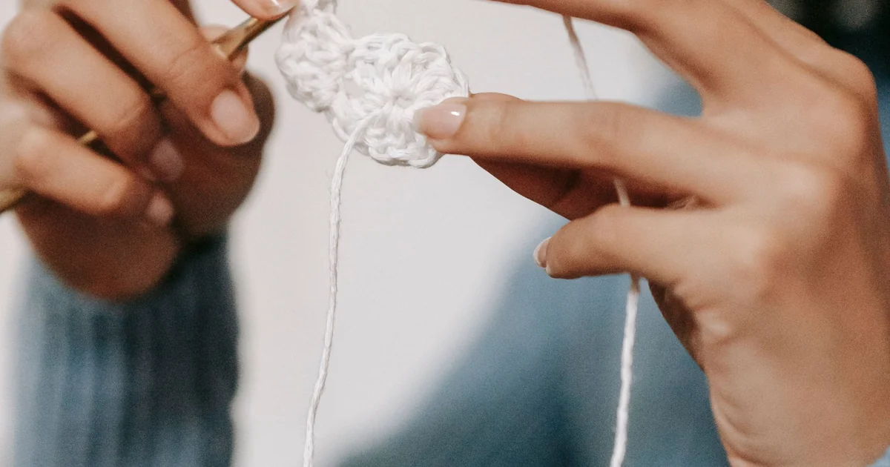
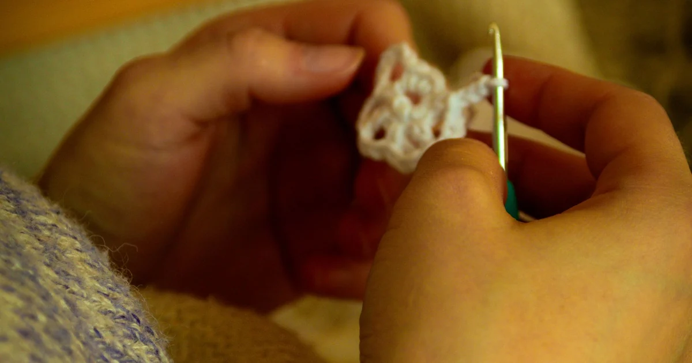
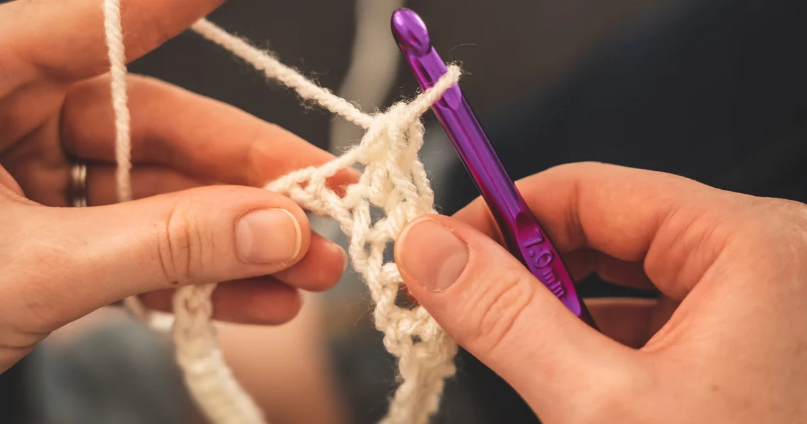

Tools, Yarn & MaterialsWhat Crochet Hook Size Should a Beginner Use?
Use the hook size named in the pattern as your starting point, then compare a gauge swatch if finished measurements matter.
Browse category
Explore clear, beginner-friendly crochet tutorials in tools, yarn & materials. Start with the basics, practice at your own pace, and follow the linked guides whenever you need another explanation.

Tools, Yarn & MaterialsUse the hook size named in the pattern as your starting point, then compare a gauge swatch if finished measurements matter.

Tools, Yarn & MaterialsFor a first project, choose smooth yarn in a light color so you can see each loop and undo stitches easily.

Tools, Yarn & MaterialsThe Craft Yarn Council groups yarn from weight 0 (lace) through weight 7 (jumbo); higher numbers generally indicate thicker yarn.
 Tools, Yarn & Materials
Tools, Yarn & MaterialsA yarn label tells you the fiber, weight, yardage, care directions, and suggested hook range to help match yarn to a project.
 Tools, Yarn & Materials
Tools, Yarn & MaterialsGauge is the number of stitches and rows in a measured area; matching the pattern gauge helps a project reach its intended size.
 Tools, Yarn & Materials
Tools, Yarn & MaterialsEstimate yarn from the pattern’s yardage, then account for any change in size, stitch, yarn, or gauge.
 Tools, Yarn & Materials
Tools, Yarn & MaterialsMost beginners can start with a hook, suitable yarn, scissors, a tapestry needle, and a stitch marker.

Tools, Yarn & MaterialsStore yarn clean and dry, keep its label with it, and protect it from pets, sunlight, and household pests.